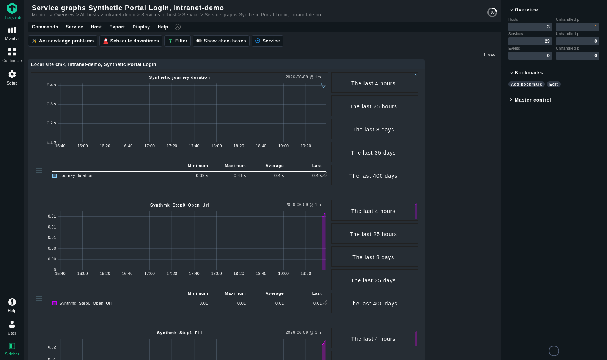
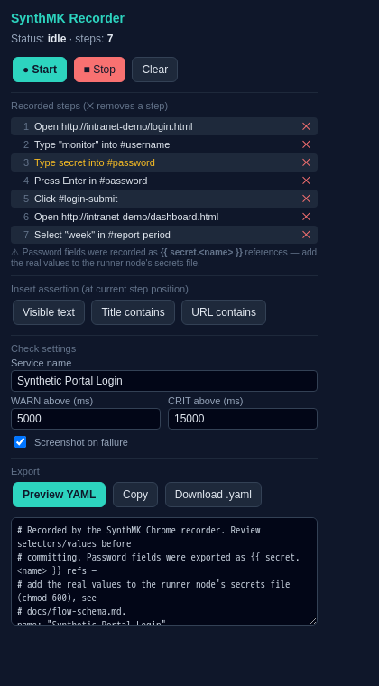
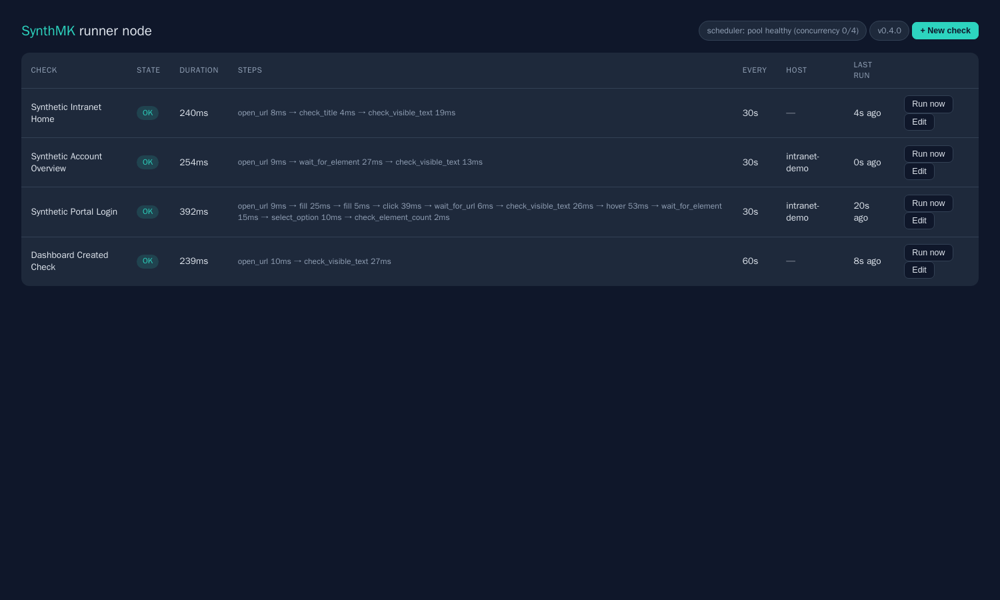
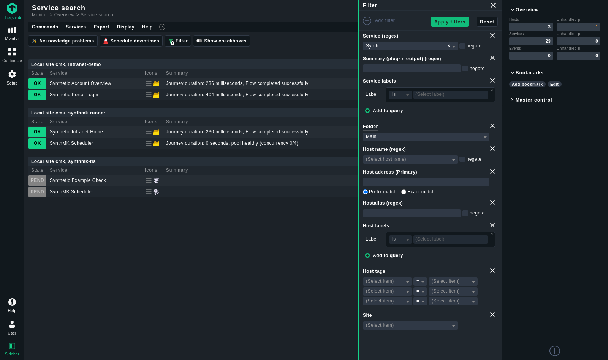
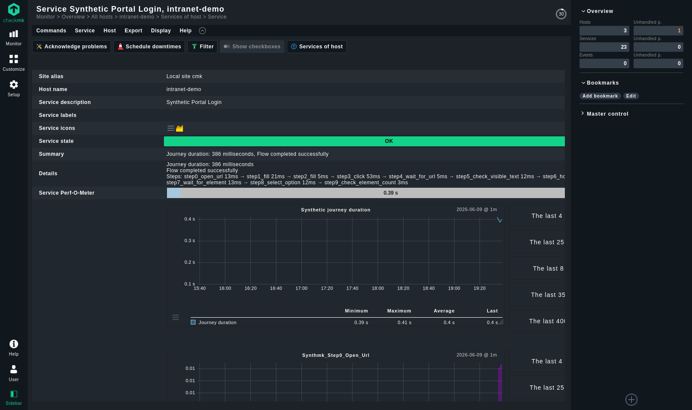

SynthMK turns real browser journeys into native Checkmk services. Record once in your browser, run on a self-hosted Playwright node inside your network, and let Checkmk do what it does best — alert, graph, report. No Robot Framework. No enterprise license. No cloud.
MIT-licensed · verified against Checkmk Raw 2.3 · one container, one MKP, one extension

Three pieces, each doing one job. Your monitored apps never know the difference between SynthMK and a real user.
Click through the journey like a user. The extension captures clicks, typing, dropdowns and Enter presses into readable YAML — and records password fields as {{ secret.* }} references, never the value.

One hardened Docker appliance inside your intranet runs every flow on its own schedule with a real Chromium — and manages them from a built-in dashboard with one-click run-now and a linting flow editor.

A native check plugin renders every journey as a real service: state, journey duration with thresholds, per-step metrics, failure screenshots — and settings editable right in Checkmk's Setup GUI.

Every feature below ships verified — the test evidence is public in the repo.
Chrome, Edge and Firefox extension with a live editable step list, assertions, thresholds and one-click YAML export.
Credentials live in a chmod-600 file on your node. Flows reference them by name; values are redacted from every output and masked in screenshots.
Real check plugin with discovery, unit-aware duration graphs with threshold bands, perf-o-meters and per-step metrics.
Override journey thresholds per service from Checkmk's GUI — a proper ruleset, no flow-file edits, no node access needed.
Worker-pool scheduler with stagger, overlap suppression and hard timeouts. Measured: 60 flows, 37 runs/min, zero overdue on one default node.
Non-root browsers, token-authenticated screenshots, resource limits, and an optional one-command TLS agent registration.
Every failed step captures the page exactly as the check saw it, served with per-file HMAC tokens and linked from the service.
Manage checks in the browser: live states, per-step timings, run-now, and a flow editor that lints before it saves.
Checkmk's official synthetic monitoring (Robotmk) is powerful — and enterprise-only, Robot-Framework-based, and heavyweight. SynthMK targets the gap underneath it.
| Checkmk Synthetic Monitoring (Robotmk) | SynthMK | |
|---|---|---|
| Checkmk edition | Commercial editions, extra subscription | Raw / CRE — free, MIT-licensed |
| Engine | Robot Framework keyword DSL | Playwright, readable YAML |
| Authoring | Write .robot suites by hand | Record in the browser, export YAML |
| Environment management | RCC env builds on each test host | One pre-baked container — nothing to build |
| Credentials | Secret env vars, plaintext in agent config | 0600 secrets file, output-redacted, screenshot-masked |
| Per-step visibility | Keyword services (rich) | Per-step metrics + breakdown on every service |
| Check management | Bakery rules + .robot redeploys | Web dashboard with linting editor + run-now |
| Footprint | A platform | One container + one MKP + one extension |
One container on your network, one MKP on your Checkmk site, one host entry. That's the whole install.
# 1 — the runner node (any Docker host inside your network) git clone https://github.com/GranusClarvis/SynthMK.git && cd SynthMK docker build -f runner-node/Dockerfile -t synthmk-runner . docker run -d --name synthmk-runner \ -p 6556:6556 -p 9180:9180 -p 9181:9181 \ -v "$PWD/flows:/opt/synthmk/flows" \ -e SYNTHMK_SHOT_BASE_URL="http://<node-lan-ip>:9180" \ synthmk-runner # 2 — the Checkmk plugin (on your site) mkp add synthmk-*.mkp && mkp enable synthmk # 3 — add the node as a host in Checkmk, run service discovery. # Every flow appears as a service — graphs, thresholds, alerts included.
http://<node>:9181 — it lints before saving, and the check is live on the next interval.Real screenshots from the test lab that every release is verified against.

Everything ships from GitHub Releases. Current release: v0.4.0.
The native check plugin, ruleset, graphs and runner payload. Install on your site via mkp add or Setup → Extension packages.
The recorder for Chrome and Edge (one package) or Firefox. Load via your browser's developer mode — store listings are on the roadmap.
Chrome / Edge .zipThe appliance builds from the repo in one command (pinned Playwright + browsers included). Hardened compose template in runner-node/.
Synthetic checks hold your credentials and watch your internal apps — SynthMK treats both accordingly. Read the full security review →